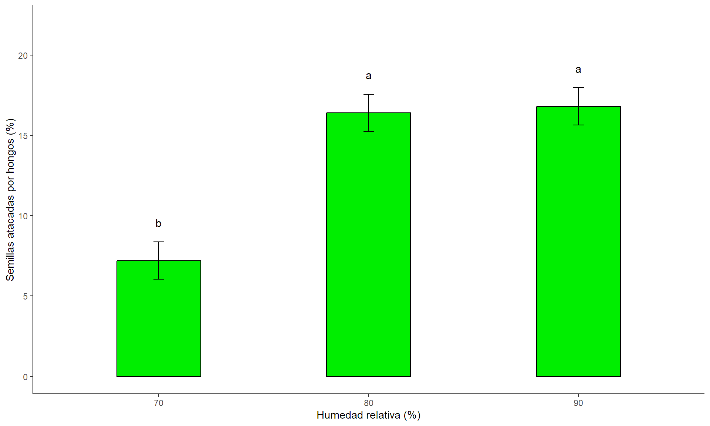
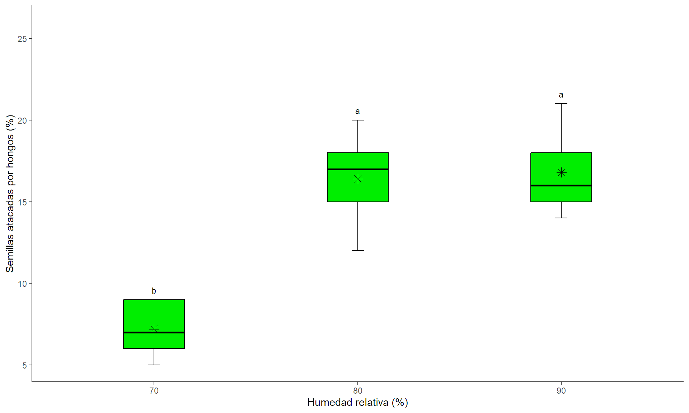

ANOVA con R
Diseño de un solo factor completamente aleatorio - DCA
Introducción.
Diseño Completamente Aleatorio (DCA)
El DCA es un diseño experimental básico donde los tratamientos se asignan al azar a las unidades experimentales. Se utiliza para comparar las medias de diferentes grupos. Se caracteriza por tener un solo factor a estudiar, asignación aleatoria de las unidades experimentales y homogeneidad de las unidades experimentales (no existen diferencias sistemáticas entre ellas antes de aplicar los tratamientos).
Tipos de pruebas estadísticas
ANOVA de una vía. Se emplea para determinar si existen diferencias significativas entre las medias de los tratamientos y requiere el cumplimiento de los supuestos sobre los residuales del modelo.
ANOVA - Welch de una vía. Se emplea para determinar si existen diferencias significativas entre las medias de los tratamientos cuando solo no se cumple el supuestos de homocedasticidad sobre los residuales del modelo.
Prueba de Kruskal-Wallis. Permite compara las medianas entre varios tratamientos y se emplea cuando los residuales del modelo no cumplen con el supuesto de normalidad.
Actividad práctica.
Contexto de los datos
El porcentaje de humedad relativa (HR) es un factor determinante para el ataque de hongos en semillas. Para evaluar la susceptibilidad de las semillas de maní al ataque de un hongo, Di Rienzo et al., citan un experimento que se realizó en cámaras de cría con tres porcentajes de HR: 70%, 80% y 90%. Cinco observaciones fueron tomadas para cada porcentaje de HR, registrándose el porcentaje de semillas atacadas en un grupo de cien semillas” (Diseño Y Análisis De Experimentos De López Bautista Y González Ramírez)
Librerías.
Recuerde que debe instalar previamente la(s) librería(s) que no ha utilizado antes.
Ingresar y ajustar los datos
Creación del modelo.
La función aov() crea modelos lineales que relacionan una variable dependiente (numérica) con una o más variables independientes (factores o covariables). Tiene como argumentos formula= Una expresión que define la relación entre la variable dependiente y las variables independientes y data= Un data frame que contiene los datos.
Verificación de supuestos.
La verificación de los supuestos se hacen sobre los residuales del modelo creado e incluye:
Supuesto de normalidad: Se verifica con el test Shapiro-Wilk, función
shapiro.test()Supuesto de homocedasticidad: Se verifica con el test de Bartlett, función
bartlett.test()Supuesto de independencia: Se garantiza aplicando el principio de aleatorización y se puede verificar con el test de durbin Watson, función
dwtest.test()
Supuesto - normalidad de los residuales.
Hipótesis estadísticas:
\(H_0:=\) Los residuales se ajusta a la distribución normal.
\(H1:=\) Los residuales no se ajusta a la distribución normal.
Regla de Interpretación. Valores de p mayores o iguales al nivel de significancia respaldan la \(H_o\), mientras que valores de p menores respaldan la \(H_1\).
Shapiro-Wilk normality test
data: modelo$residuals
W = 0.97983, p-value = 0.9683Supuesto - homocedasticidad de los residuales.
Hipótesis estadísticas:
\(H_0:=\) Los residuales se distribuyen con varianza constante.
\(H1:=\) Los residuales no se distribuyen con varianza constante.
Regla de Interpretación. Valores de p mayores o iguales al nivel de significancia respaldan la \(H_o\), mientras que valores de p menores respaldan la \(H_1\).
Bartlett test of homogeneity of variances
data: modelo$residuals by Datos$HR
Bartlett's K-squared = 1.0326, df = 2, p-value = 0.5967Supuesto - Independencia de los residuales.
Hipótesis estadísticas:
\(H_0:=\) No existe autocorrelación de primer orden en los residuales.
\(H1:=\) Existe autocorrelación de primer orden en los residuales.
Regla de Interpretación. Valores de p mayores o iguales al nivel de significancia respaldan la \(H_o\), mientras que valores de p menores respaldan la \(H_1\).
Durbin-Watson test
data: modelo
DW = 2.3812, p-value = 0.8244
alternative hypothesis: true autocorrelation is not 0Tabla del análisis de varianza.
- Si se cumplen todos los supuestos use la función
summary.aov() - Si solo no se cumplen la homocedasticidad use la función
oneway.test()con argumentovar.equal=FALSE - Si no cumple la normalidad use la función
kruskal()ubicada en la libreria agricolae.
Tabla del análisis de varianza.
Objetivo: Determinar si hay diferencias significativas en porcentaje de semillas atacadas por hongos para diferentes % de HR.
Hipótesis estadísticas:
\(H_0:=\) No hay diferencias en el porcentaje de semillas atacadas por hongos entre los diferentes % de HR.
\(H_1:=\) Entre al menos un par de % HR hay diferencias en el porcentaje de semillas atacadas por hongos.
Regla de Interpretación. Valores de p mayores o iguales al nivel de significancia respaldan la \(H_o\). mientras que valores de p menores respaldan la \(H_1\).
Df Sum Sq Mean Sq F value Pr(>F)
HR 2 294.9 147.47 21.9 9.89e-05 ***
Residuals 12 80.8 6.73
---
Signif. codes: 0 '***' 0.001 '**' 0.01 '*' 0.05 '.' 0.1 ' ' 1Prueba de múltiples rangos.
¿Cuándo se aplica? cuando el análisis de varianza arroja un resultado significativo.
¿Con qué fin? indentificar en qué tratamiento(s) la media es diferente.
¿Test a emplear?
LSD.test()contrastes con mínimas diferencias de fisher,HSD.test()contrastes con Tukey-kramer,duncan.test()contrastes con duncan,scheffe.test()contrastes con scheffé, etc.
Prueba de múltiples rangos -LSD.
$statistics
MSerror Df Mean CV t.value LSD
6.733333 12 13.46667 19.26881 2.178813 3.575732
$parameters
test p.ajusted name.t ntr alpha
Fisher-LSD none HR 3 0.05
$means
Porcentaje std r se LCL UCL Min Max Q25 Q50 Q75
70 7.2 1.788854 5 1.16046 4.671576 9.728424 5 9 6 7 9
80 16.4 3.049590 5 1.16046 13.871576 18.928424 12 20 15 17 18
90 16.8 2.774887 5 1.16046 14.271576 19.328424 14 21 15 16 18
$comparison
NULL
$groups
Porcentaje groups
90 16.8 a
80 16.4 a
70 7.2 b
attr(,"class")
[1] "group"Alternativas gráficas.
## Barras de media.
medias <- LSD$means
medias$factor <- rownames(medias)
grupos<-LSD$groups
means<-left_join(medias, grupos, by = join_by(Porcentaje))
ggplot(means, aes(x = factor, y = Porcentaje)) +
geom_bar(stat = "identity", color = "black", fill = "green2", width = 0.4) +
geom_errorbar(aes(ymin = Porcentaje - se, ymax = Porcentaje+ se),
width = 0.05) +
geom_text(aes(label = groups), vjust = -4, size = 4) +
labs(x = "Humedad relativa (%)", y = "Semillas atacadas por hongos (%)")+
theme_classic()+ylim(c(0,max(Porcentaje)+1))Alternativas gráficas.

Alternativas gráficas.
tb <- LSD$groups
tb$factor <- rownames(tb)
tb1<-left_join(tb, LSD$means %>% select(Porcentaje,Q75,Max), by=join_by(Porcentaje))
ggplot(data = Datos,aes(x = HR,y = Porcentaje))+
stat_boxplot(geom='errorbar', linetype=1, width=0.06)+
geom_boxplot(fill="green2",color="black",width=0.3)+
stat_summary(fun=mean, geom="point", size=3, shape=8)+
theme_classic()+ labs(y="Semillas atacadas por hongos (%)",
x="Humedad relativa (%)")+
geom_text(data = tb1, aes(x = factor, y = Max, label =groups),
size = 3, vjust=-1)+
ylim(c(0,max(Porcentaje))+5)Alternativas gráficas.

Tamaño del efecto.
Interpretación:
Valores cercanos a 0 indican un tamaño de efecto pequeño.
Valores alrededor de 0.06 se consideran un tamaño de efecto mediano.
Valores mayores a 0.14 se consideran un tamaño de efecto grande
# Effect Size for ANOVA
Parameter | Eta2 | 95% CI
-------------------------------
HR | 0.78 | [0.53, 1.00]
- One-sided CIs: upper bound fixed at [1.00].# Effect Size for ANOVA
Parameter | Omega2 | 95% CI
---------------------------------
HR | 0.74 | [0.43, 1.00]
- One-sided CIs: upper bound fixed at [1.00].Prueba de potencia.
Balanced one-way analysis of variance power calculation
k = 3
n = 5
f = 0.74
sig.level = 0.05
power = 0.6108441
NOTE: n is number in each groupAnexo - Prueba de anova de welch.
One-way analysis of means (not assuming equal variances)
data: Porcentaje and HR
F = 27.508, num df = 2.0000, denom df = 7.5278, p-value = 0.0003459#Prueba de multiples rangos.
library(PMCMRplus)
Resultado<-gamesHowellTest(Porcentaje~HR, data = Datos)
summaryGroup(Resultado) mean sd n Sig. group
70 7.2 1.789 5 a
80 16.4 3.050 5 b
90 16.8 2.775 5 bAnexo - Prueba de Kruskal - Wallis.
$statistics
Chisq Df p.chisq t.value MSD
9.430521 2 0.008957534 2.178813 3.792637
$parameters
test p.ajusted name.t ntr alpha
Kruskal-Wallis none HR 3 0.05
$means
Porcentaje rank std r Min Max Q25 Q50 Q75
70 7.2 3.0 1.788854 5 5 9 6 7 9
80 16.4 10.4 3.049590 5 12 20 15 17 18
90 16.8 10.6 2.774887 5 14 21 15 16 18
$comparison
NULL
$groups
Porcentaje groups
90 10.6 a
80 10.4 a
70 3.0 b
attr(,"class")
[1] "group"